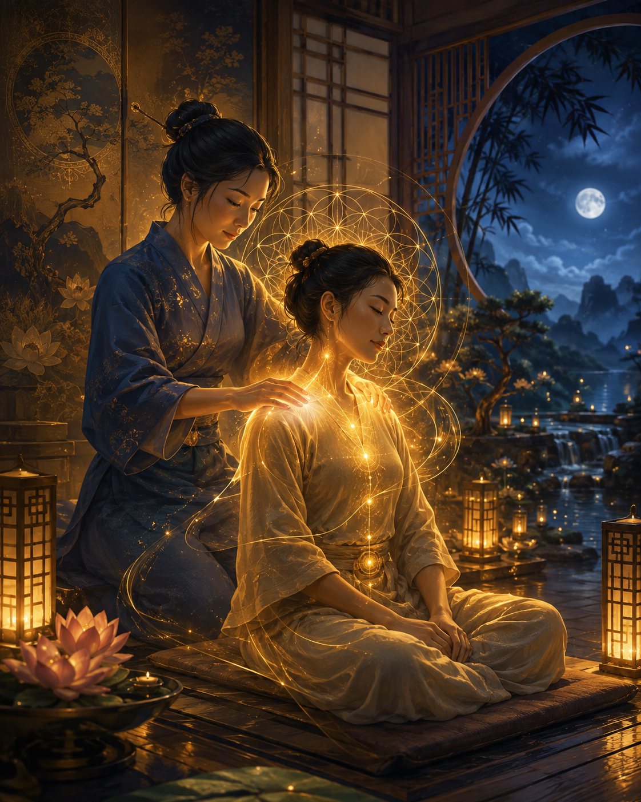

Le Massage Amma
Le Amma (écrit parfois Anma) (idéogrammes signifiant "An" : Presser & "Ma" : Frotter / Effleurer) est une technique de massage traditionnelle d'origine asiatique. Basé sur les principes de la médecine traditionnelle chinoise et développé au Japon, il s'exécute selon un Kata (un enchaînement précis de mouvements) de pressions, d'étirements, de balayages et de percussions sur des points d'acupuncture ciblés.

Pratiqué assis sur une chaise ergonomique et à travers des vêtements confortables, le massage Amma Assis est une méthode rapide, dynamique et profondément relaxante qui vise à stimuler la circulation de l'énergie vitale (le Chi) dans tout le corps.Histoire
Le Amma est l'ancêtre du Shiatsu qui lui est inspiré de la médecine traditionnelle chinoise. Né en Chine il y a plus de 2 000 ans (premier texte fondateur écrit : Le Huangdi Neijing), la médecine traditionnelle chinoise a voyagé jusqu'au Japon au VIᵉ siècle, où elle est devenue la forme de massage officielle Amma, enseignée et pratiquée quotidiennement pour maintenir la santé de la population.
Dans les années 1980, l'Américain David Palmer (élève du maître Takashi Nakamura) adapte cette pratique ancestrale au monde moderne en inventant la première chaise ergonomique de massage. C'est ainsi qu'est né le « Amma Assis », conçu pour offrir une pause de détente profonde et accessible à tous, même dans un emploi du temps chargé.
Quelle est l'approche énergétique & corporelle ?
Le massage Amma agit sur le réseau des méridiens d'acupuncture du dos, des épaules, du cou, de la tête, des bras et des mains.
C'est un soin à double action : il procure d'abord un apaisement nerveux très rapide (effet relaxant), puis relance le flux d'énergie globale (effet redynamisant). On repart de la séance apaisé, mais sans la sensation de lourdeur ou d'engourdissement que peuvent parfois laisser certains massages à l'huile.
Quels sont les bienfaits du massage Amma ?
Le Amma apporte un soulagement physique et mental quasi immédiat
Sur le plan physique
- Soulagement des tensions musculaires : Cible précisément les zones les plus sujettes au stress (nuque, épaules, haut et bas du dos, bras).
- Amélioration de la posture : Libère les raideurs dues au travail sur écran ou aux gestes répétitifs.
- Stimulation de la circulation : Favorise la circulation sanguine et lymphatique, aidant ainsi le corps à éliminer les toxines.
Sur le plan mental & émotionnel
- Réduction rapide du stress : Fait chuter la tension nerveuse et diminue le niveau d'anxiété en quelques minutes.
- Clarté d'esprit: Oxygène le cerveau, dissipe la fatigue mentale et améliore la concentration.
Sur le plan énergétique
- Rééquilibrage global : Dénoue les blocages le long des méridiens pour rétablir une circulation fluide du Chi.
- Effet "Coup de fouet" : Procure une sensation de vitalité et d'énergie renouvelée.
Comment se déroule une séance ?
Vous prenez place habillé(e) sur une chaise ergonomique conçue pour soutenir parfaitement le corps sans aucun effort de votre part. Pendant la séance, j'effectue un enchaînement fluide de pressions légères à profondes sur votre dos, vos épaules, votre nuque, votre tête et vos bras.
En 20 à 30 minutes, les tensions s'évaporent, votre esprit se calme et vous repartez avec une sensation unique de légèreté, de fraîcheur et de vitalité.
Convaincu ? Curieux ? N'hésitez pas à...
Prendre contact
Ou encore à parcourir les autres soins